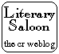

A
Literary Saloon
&
Site of Review.
Trying to meet all your book preview and review needs.
| Main |
 |
| the Best |
| the Rest |
| Review Index |
| Links |

to e-mail us:
The Invention of Peace
by
Michael Howard
general information | review summaries | our review | links | about the author

| Title: | The Invention of Peace |
| Author: | Michael Howard |
| Genre: | History |
| Written: | 2000 |
| Length: | 113 pages |
| Availability: | The Invention of Peace - US |
| The Invention of Peace - UK | |
| The Invention of Peace - Canada | |
| Die Erfindung des Friedens - Deutschland |
- Reflections on War and International Order
- Return to top of the page -
Our Assessment:
B : fine but brief overview of peace and war
See our review for fuller assessment.
| Source | Rating | Date | Reviewer |
|---|---|---|---|
| America | . | 9/4/2001 | John Dear |
| Daily Telegraph | A | 7/7/2000 | Niall Ferguson |
| Evening Standard | A+ | 3/7/2000 | Max Hastings |
| Neue Zürcher Zeitung | . | 12/6/2001 | Wolfgang Sofsky |
| RUSI Journal | . | 12/2000 | Christopher Coker |
| Sunday Times | A | 16/7/2000 | William Shawcross |
| TLS | . | 6/10/2000 | Edward N. Luttwak |
| Die Welt | A | 20/10/2001 | Jacques Schuster |
| Die Zeit | . | (32/2001) | Herfried Münkler |
Review Consensus:
Generally enthusiastic, though reviews are more descriptive than critical
From the Reviews:
- "Howard's panoramic glance over the major trends of war does not so much reveal the invention of peace as the ongoing re-invention of war. And it is quite sobering. (...) While his survey spotlights the reality of humanity's long love affair with war, in the end, The Invention of Peace disappointed me because there was no serious analysis about how we can get ourselves out of this self-destructive addiction to war. Indeed, he concludes that there is little hope that we will ever be free of war." - John Dear, America
- "If I have any quibble with Professor Howard it is that he says too little about civil war, the real serpent in this Kantian paradise. (...) (L)ike all the best lecturers, Howard does not get bogged down in detail (the only numbers in the text are dates). (...) (T)he felicity of expression throughout is a delight." - Niall Ferguson, Daily Telegraph
- "(A) superbly crafted essay, explaining why the West would be foolish to assume that permanent peace has come upon us. (...) This essay is a brilliant reflection on the world in which we live, and the potential threats to it. At root, Sir Michael echoes the message of sensible statesmen and soldiers through the ages: you never can tell." - Max Hastings, Evening Standard
- "(T)he book shows no signs of any lack of vigour or the quiet passion which has animated most of his work (a passion for peace informed by an understanding that to build peace one has to understand war fully)." - Christopher Coker, RUSI Journal
- "Howard thinks that peace has still not really been invented in a stable form. He hopes that at least Kant's "seed of enlightenment" survives. It flourishes in this work." - William Shawcross, Sunday Times
- "Nüchtern, gelassen, geradezu weltenklug wandelt der britische Militärhistoriker durch 1000 Jahre europäischer Geschichte, um dem Wesen des Krieges auf die Spur zu kommen und nach Möglichkeiten für den Frieden zu suchen." - Jacques Schuster, Die Welt
Please note that these ratings solely represent the complete review's biased interpretation and subjective opinion of the actual reviews and do not claim to accurately reflect or represent the views of the reviewers. Similarly the illustrative quotes chosen here are merely those the complete review subjectively believes represent the tenor and judgment of the review as a whole. We acknowledge (and remind and warn you) that they may, in fact, be entirely unrepresentative of the actual reviews by any other measure.
- Return to top of the page -
The complete review's Review:
Michael Howard's The Invention of Peace is a brief book that surveys the evolution of war and peace.
"War appears to be as old as mankind, but peace is a modern invention", Howard quotes 19th century jurist Henry Maine to begin the book.
It is this invention of peace -- and how it has been affected by the changing face of war -- that Howard focusses on.
Beside the introduction, the book is divided into four parts, examining ever-smaller windows of history and the nature of war (and peace) in those times.
The first covers the period 800 to 1789, the second goes up to 1918, the third to 1989, while the fourth looks simply at "A.D. 2000".
War was always messy, expensive, and easily got out of any sort of control.
But successfully waged war can bring great benefits (including ridding one of pesky potential attackers).
War was -- and to a surprising (or, so Howard, perhaps not so surprising) extent still is -- commonplace.
Peace brings obvious benefits with it.
There is a lot to be said for the stability that peace allows -- including, but not limited to, the economic benefits of being able to better utilize limited resources (rather than wasting them all on instruments of war).
Nevertheless, the idea of peace is a relatively new one.
Howard suggests that "if anyone could be said to have invented peace as more than a mere pious aspiration, it was Kant."
Around the same time as this notion of peace began to spread wars also became more horrific.
Generally contained and limited before, "the French revolution not only loosened the purse strings but released manpower on a scale that made it possible to field large armies".
Following Napoleon there was a great incentive -- and an historic opportunity -- to achieve some sort of peace in Europe.
There was also a desire on the part of most of those involved to see to it that there was a balance of power that would help prevent further wars.
There were conflicting views as to how to go about this, as Howard describes, but a new order was established.
It made for a fairly successful peace, lasting near a century, with only a few European hiccoughs along the way.
After that came, of course the Great War, followed closely by another war to end all wars.
With the end of the Cold War, where peace was held in the balance by the superpowers, it remains to be seen whether the current order promotes peace or ultimately pushes us to war again.
The world has changed, with one of the greatest changes being, as Howard notes, the erosion of the nation-state.
Supranational entities and multinational firms wield increasing power.
And Howard maintains that many states that have become nations since 1945 "have not developed as nations at all" -- in part because they never had to go through "that essential rite of passage" of fighting for independence.
Howard suggests several threats to peace -- not the least of which is simple boredom.
Peace is "artificial, intricate and highly volatile", he reminds the reader, and the world does not seem up to entirely it .
Howard's book has a decidedly western focus, a point he himself acknowledges.
Certainly, the European and American wars of recent centuries have taken the greatest toll and had the most impact.
Nevertheless, especially at this time small, simmering regional conflicts seem the dominant forms of war: from the former Yugoslavia to Chechnya to the myriad inter-African conflicts that is where peace is at its weakest.
A bit more focus on this would have been of interest.
The Invention of Peace is a brief survey, covering a lot of material fairly quickly.
Howard raises interesting points and he presents his arguments well, but one does wish for more exposition (as can be found in some of his other works).
It may not be an age for peace, but apparently it is an age for concision .....
Still, a worthwhile little book.
- Return to top of the page -
The Invention of Peace:
- Profile Books publicity page
- Yale University Press publicity page
- Article in The Guardian
- Interview in Salon
- About.com
- Common Dreams
- Evening Standard
- Peace Matters
- taz (German)
- Die Welt (German)
- Die Zeit (German)
- Return to top of the page -
Sir Michael Eliot Howard was born in 1922. He taught at Oxford and at Yale and is the author of numerous books.
- Return to top of the page -
© 2001-2003 the complete review
Main | the New | the Best | the Rest | Review Index | Links